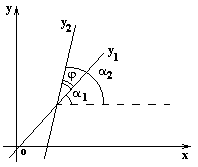
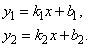
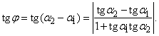
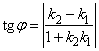
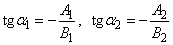
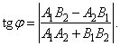

6.2.9. Угол между двумя прямыми

Пусть две прямые заданы уравнениями:

Острый угол  пересечения этих
прямых (отсчитываемый против часовой стрелки) находится из следующих
соотношений:
пересечения этих
прямых (отсчитываемый против часовой стрелки) находится из следующих
соотношений:
пересечения этих
прямых (отсчитываемый против часовой стрелки) находится из следующих
соотношений:
Отсюда

Угол между двумя
прямыми
.
Если прямые заданы общими уравнениями  и
и  ,
то угловые коэффициенты прямых равны:
,
то угловые коэффициенты прямых равны:
и ,
то угловые коэффициенты прямых равны:
и угол между прямыми
определяется формулой:
между прямыми
определяется формулой:

Угол между двумя
прямыми, заданными общими уравнениями